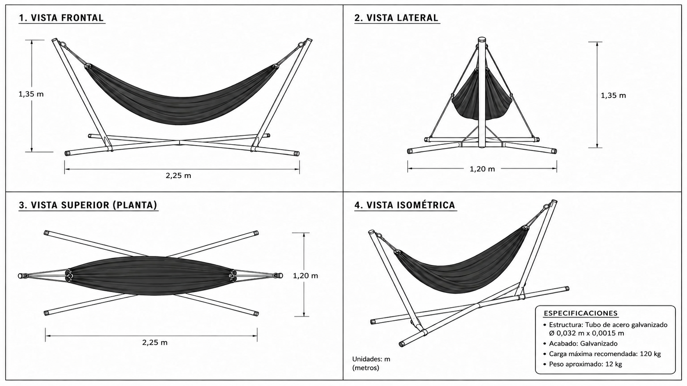
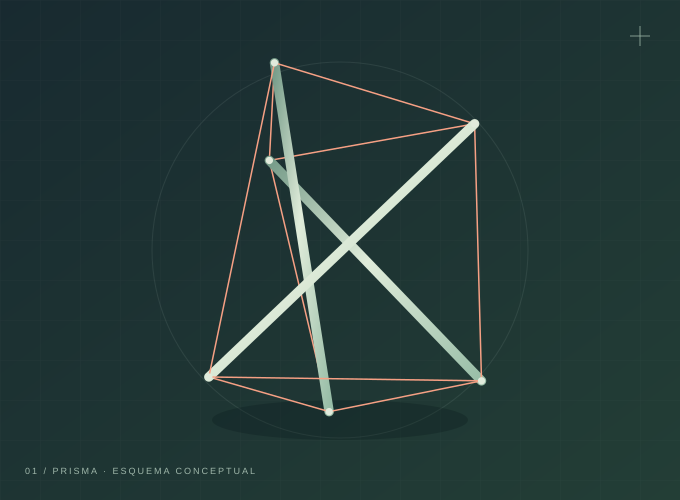
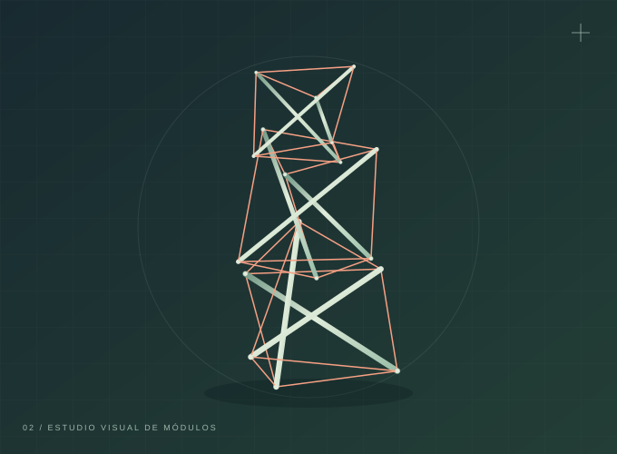
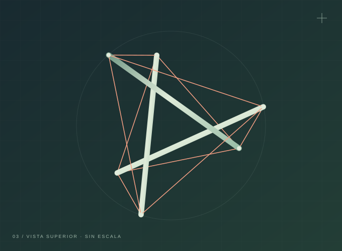

Elementos que empujan
Las barras resisten fuerzas que tienden a acortarlas.
FÍSICA, DISEÑO Y UN POCO DE ASOMBRO
Barras que parecen flotar. Cables que lo conectan todo. Descubre el equilibrio invisible de la tensegridad.
UN RECORRIDO INTERACTIVO · PROYECTO ESCOLAR
Representación conceptual; no es una simulación estructural.
01 / EL CONCEPTO
La tensegridad combina elementos rígidos que se comprimen con una red de elementos flexibles que se tensan. Juntos mantienen una forma estable.
En la tensegridad clásica, las barras no se tocan entre sí: quedan conectadas por una red continua de cables tensados. La forma y la tensión inicial son parte esencial del equilibrio.
El nombre deriva del inglés tensional integrity. [1]
Las barras resisten fuerzas que tienden a acortarlas.
Los cables transmiten fuerzas que tienden a estirarlos.
La disposición de las conexiones permite que las fuerzas se compensen.
02 / UNA IDEA CON HISTORIA
Una conversación entre escultura, geometría e ingeniería que sigue abriendo posibilidades.
Kenneth Snelson y Buckminster Fuller coinciden en Black Mountain College. Snelson desarrolla sus primeras exploraciones con elementos separados unidos por hilos. [1]
Fuller acuña el término tensegrity, según la cronología del Buckminster Fuller Institute. [1]
Snelson crea Needle Tower, una obra de aluminio y acero inoxidable que forma parte de la colección del Hirshhorn. [2]
El proyecto experimental SUPERball de NASA Ames estudia robots con barras y cables para explorar nuevas formas de aterrizaje y locomoción. [3]
03 / LABORATORIO VISUAL
Cambia la vista para reconocer las partes. El modelo conserva su geometría: los controles solo resaltan sus elementos.
Esquema didáctico. Sin cálculos de fuerzas ni capacidad de carga.
EL SISTEMA COMPLETO
Las barras mantienen separados los puntos de unión, mientras los cables restringen sus movimientos. El equilibrio depende de la geometría y de la tensión inicial de la red.
GeometríaLa posición de cada unión define cómo se conectan las piezas.
PretensiónLa red ya tiene tensión antes de añadir una carga externa.
Equilibrio y estabilidadLas fuerzas se compensan; la estabilidad también depende de la respuesta ante perturbaciones.
Fundamento: estudio de estructuras de tensegridad. [4]
04 / ENTENDER LAS FUERZAS
Aparece cuando los extremos de un elemento reciben fuerzas que tienden a separarlos. En el modelo, la transmiten los cables.
Imagínalo: una cuerda estirada entre tus manos.
ELEMENTO FLEXIBLE · CABLEAparece cuando las fuerzas tienden a acercar los extremos de un elemento. En el modelo, las barras trabajan principalmente a compresión.
Imagínalo: un resorte que aprietas entre las manos.
ELEMENTO RÍGIDO · BARRAUn cable flexible puede tirar, pero no sostener un empuje longitudinal sin aflojarse o cambiar de forma. Las barras también pueden deformarse; ningún material es infinitamente rígido.
05 / DE LA IDEA AL MUNDO
La tensegridad aparece en obras artísticas y proyectos de investigación. También inspira modelos para aprender.
En Needle Tower, de Snelson, la relación entre barras y cables transforma el espacio en una obra de arte. [2]
Conocer la obra (abre una pestaña nueva)SUPERball investiga una estructura deformable de barras y cables. Modificar sus tensiones permite explorar nuevas formas de movimiento. [3]
Explorar en NASA (abre una pestaña nueva)Los modelos de aula ayudan a visualizar fuerzas, conexiones y equilibrio. El principio también se estudia en ingeniería estructural. [4]
Ver nuestro concepto06 / MIRADA CRÍTICA
Las ventajas dependen del diseño, los materiales y el uso. Una apariencia ligera no garantiza resistencia.
07 / NUESTRO PROYECTO
El plano del proyecto reúne cuatro vistas de la hamaca: frontal, lateral, superior e isométrica. Aquí puedes consultar sus medidas en metros y explorar una representación tridimensional.
Observa la tela suspendida, las barras del soporte y los tensores. El modelo permite reconocer su posición y sus conexiones desde distintos ángulos.
Explorar la hamaca en 3DLAS MEDIDAS DEL PLANO
| Medida | Milímetros | Metros |
|---|---|---|
| Largo | 2250 mm | 2,25 m |
| Ancho | 1200 mm | 1,20 m |
| Alto | 1350 mm | 1,35 m |
| Diámetro del tubo | 32 mm | 0,032 m |
| Espesor del tubo | 1,5 mm | 0,0015 m |
1 metro = 1000 milímetros · mm ÷ 1000 = m

Ampliar plano de la hamacaPlano del proyecto con todas las cotas expresadas en metros, tanto en las vistas como en las especificaciones del tubo.
08 / GALERÍA DE IDEAS
Esquemas originales para observar las conexiones. Selecciona una imagen para ampliarla.

Ampliar el módulo básico
Ampliar geometría en altura
Ampliar otra perspectivaANTES DE SEGUIR…
En este modelo de tensegridad, ¿qué elementos trabajan principalmente a tensión?
Selecciona una respuesta.
09 / SEGUIR APRENDIENDO
Referencias para contrastar conceptos y profundizar. Los enlaces externos se abren en una pestaña nueva.
Tensegrity. Definición, origen del término y encuentro entre Fuller y Snelson.
Needle Tower. Ficha de la obra de Kenneth Snelson, fechada en 1968.
NASA-Developed Spherical Robots to the Rescue. Investigación y aplicaciones de robots de tensegridad.
Nabet, B. y Leonard, N. E. (2006). Shape Control of a Multi-Agent System Using Tensegrity Structures. Modelos de tensegridad y control de formas (PDF en inglés).
Fuentes consultadas en octubre de 2026. Textos adaptados con fines educativos. Ilustraciones conceptuales propias; plano de hamaca proporcionado para el proyecto.